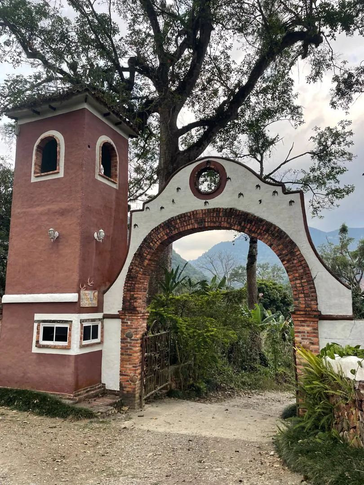
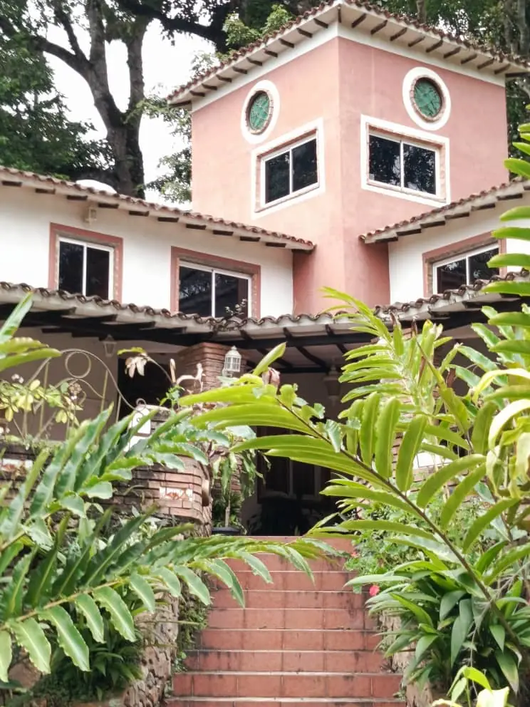

Posada · Restaurante · Finca cafetalera
El Rincón de las Golondrinas
Una posada en la montaña de Sanare, estado Lara, con río, cascada, senderos y jardines llenos de pájaros. Clima fresco de montaña.
Todo lo que encontrará aquí.
Toque cada parte para conocerla.
- La posadaCasa principal, cabañas, corredores y jardines.
- HabitacionesCuatro opciones matrimoniales y dos cabañas para 5.
- RestauranteDesayunos y restaurante propio, dentro de la posada.
- Finca y caféUna finca cafetalera cerca de la ruta del café.
- NaturalezaRío, cascada, senderos y muchos pájaros.
- Cómo llegarÚltimo tramo de tierra, señalizado.
La posada
Una casa rosada entre jardines.
La casa principal de ventanas redondas, cabañas blancas con techo de teja, corredores de piso de terracota y caminos de piedra entre plantas tropicales. Todo en la montaña, con el fresco de Sanare.
Habitaciones
Para dos o para el grupo.
- MatrimonialConsultar tarifa
- Matrimonial con 2 camasConsultar tarifa
- Matrimonial + cama adicionalConsultar tarifa
- Matrimonial + 2 camas adicionalesConsultar tarifa
Para familias y grupos
Dos cabañas para 5 personas.
Dos cabañas equipadas, ideales para venir en familia o con amigos: cada una recibe a cinco personas. Escríbanos con sus fechas y le confirmamos la disponibilidad y la tarifa.
 Ver río, cascada y senderos
Ver río, cascada y senderos
Naturaleza
Río, cascada y senderos.
Senderos entre el bosque que bajan hasta el río y la cascada. En los jardines y entre los árboles hay pájaros por todas partes.
Así se ve la posada.
Deslice para ver más y toque una foto para verla en grande.
Camino de tierra, señalizado.
La posada queda en la montaña de Sanare. El último tramo del camino es de tierra: siga los letreros desde la carretera y, si lo necesita, le enviamos la ubicación por WhatsApp.
Reserve en tres pasos.
Escríbanos con sus fechas
Por WhatsApp, con el día de llegada, el de salida y cuántas personas vienen.
Le confirmamos
La disponibilidad y la tarifa de la habitación o cabaña que prefiera.
Le enviamos cómo llegar
La ubicación y las indicaciones del camino hasta la posada.